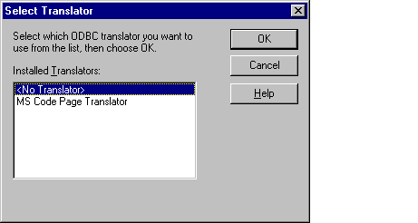

Conformance
Version Introduced: ODBC 2.0
Summary
SQLGetTranslator displays a dialog box from which a user can select a translator.
Syntax
BOOL SQLGetTranslator(
HWND hwndParent,
LPSTR lpszName,
WORD cbNameMax,
WORD * pcbNameOut,
LPSTR lpszPath,
WORD cbPathMax,
WORD * pcbPathOut,
DWORD * pvOption);
Arguments
hwndParent
[Input]
Parent window handle.
lpszName
[Input/Output]
Name of the translator from the system information.
cbNameMax
[Input]
Maximum length of the lpszName buffer.
pcbNameOut
[Input/Output]
Total number of bytes (excluding the null-termination byte) passed or returned in lpszName. If the number of bytes
available to return is greater than or equal to cbNameMax, the translator name in lpszName is truncated to
cbNameMax minus the null-termination character. The pcbNameOut argument can be a null pointer.
lpszPath
[Output]
Full path of the translation DLL.
cbPathMax
[Input]
Maximum length of the lpszPath buffer.
pcbPathOut
[Output]
Total number of bytes (excluding the null-termination byte) returned in lpszPath. If the number of bytes available
to return is greater than or equal to cbPathMax, the translation DLL path in lpszPath is truncated to
cbPathMax minus the null-termination character. The pcbPathOut argument can be a null pointer.
pvOption
[Output]
32-bit translation option.
Returns
The function returns TRUE if it is successful, FALSE if it fails or the user cancels the dialog box.
Diagnostics
When SQLGetTranslator returns FALSE, an associated *pfErrorCode value may be obtained by calling SQLInstallerError. The following table lists the *pfErrorCode values that can be returned by SQLInstallerError and explains each one in the context of this function.
| *pfErrorCode | Error | Description |
| ODBC_ERROR_ GENERAL_ERR |
General installer error | An error occurred for which there was no specific installer error. |
| ODBC_ERROR_ INVALID_BUFF_ LEN |
Invalid buffer length | The cbNameMax or cbPathMax argument was less than or equal to 0. |
| ODBC_ERROR_ INVALID_HWND |
Invalid window handle | The hwndParent argument was invalid or NULL. |
| ODBC_ERROR_ INVALID_NAME |
Invalid driver or translator name | The lpszName argument was invalid. It could not be found in the registry. |
| ODBC_ERROR_ LOAD_LIBRARY_ FAILED |
Could not load the driver or translator setup library |
The translator library could not be loaded. |
| ODBC_ERROR_ INVALID_OPTION |
Invalid transaction option | The pvOption argument contained an invalid value. |
| ODBC_ERROR_ OUT_OF_MEM |
Out of memory | The installer could not perform the function because of a lack of memory. |
Comments
If hwndParent is null, or lpszName, lpszPath, or pvOption is a null pointer, SQLGetTranslator returns FALSE. Otherwise, it displays the list of installed translators in the following dialog box:

If lpszName contains a valid translator name, it is selected. Otherwise, <No Translator> is selected.
If the user chooses <No Translator>, the contents of lpszName, lpszPath, and pvOption are not touched. SQLGetTranslator sets pcbNameOut and pcbPathOut to 0 and returns TRUE.
If the user chooses a translator, SQLGetTranslator calls ConfigTranslator in the translator’s setup DLL. If ConfigTranslator returns FALSE, SQLGetTranslator returns to its dialog box. If ConfigTranslator returns TRUE, SQLGetTranslator returns TRUE, along with the selected translator name, path, and translation option.
Related Functions
| For information about | See |
| Configuring a translator | ConfigTranslator |
| Getting a translation attribute | SQLGetConnectAttr |
| Setting a translation attribute | SQLSetConnectAttr |